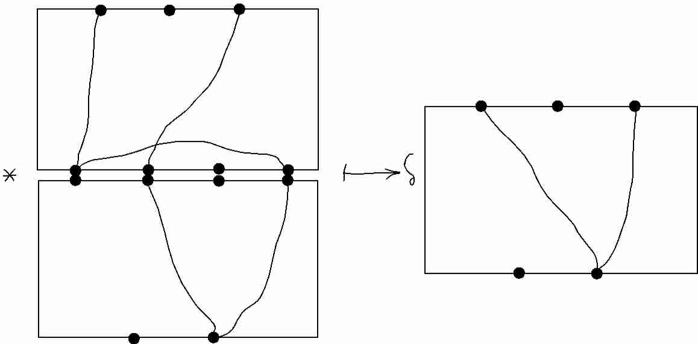

The partition category may be defined as follows. Fix a commutative ring $k$ and $\delta\in k$. Consider the triple \[ P = (\N_0 , kP(n,m) , *) \] where $P(S)$ denotes the set partitions of set $S$; and $P(n,m) = P(\underline{n} \sqcup \underline{m})$ where $\underline{n} = \{ 1 ,2, ..., n \}$. The composition $*$ can be described as follows. Firstly one draws a picture of a set partition $p$ of `vertex set' $S=\underline{n} \sqcup \underline{m}$ as a graph drawn in a rectangular box, with the elements of $S$ drawn on the frame: $\underline{n}$ on the northern edge; and $\underline{m}$ on the southern. Two elements of $S$ are in the same part if they are in the same graph component. For example:
Given pictures of a composable pair of partitions $p,p'$ one draws $p*p'$ as the stack of the two pictures, identifying the `middle' sets of vertices (just as for the set map composition above - except that we have rotated the pictures to remind ourselves that these are _not_ set maps per se):

We recover a partition from the stack as indicated. If $c$ internal connected graph components are discarded in this process one scales by a factor $\delta^c$, again as indicated.
It is an exercise to check the axioms. Next we will try to be a little more precise about the definition of $P$.